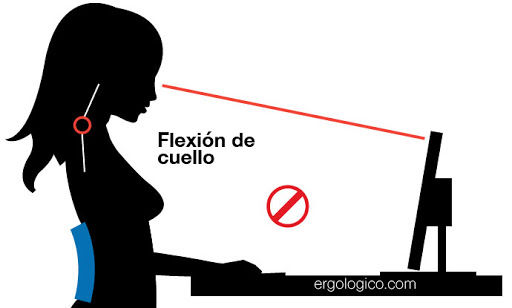
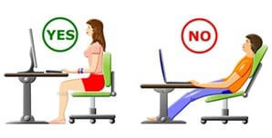
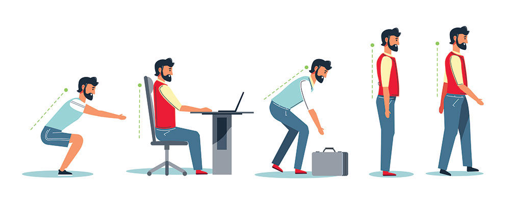

Consejos para ti: ¡Cuida tu cuerpo mientras utilizas tecnología!
El mal uso de los dispositivos tecnológicos puede causar daños a la salud física. Es importante no abusar de ellos y al momento de utilizarlos, adoptar una postura adecuada
para no perjudicar el cuerpo. A continuación, te presentamos algunos consejos que puedes tomar en cuenta para no sufrir daños a tu salud:
Visión:
Evita colocar la pantalla de tu dispositivo muy cerca de tu cara para que no sufras de miopía. La distancia ideal que deberías de tener no debe ser menor a 40 centímetros de tus ojos
Ajusta los niveles de brillo de la pantalla y evita los reflejos.

Cuello:
Procura que la parte superior de tu dispositivo quede al nivel de los ojos para evitar dolor de cuello. Revisa la altura de la silla y evita que tu espalda quede encorvada al momento
de utilizar tu dispositivo.

Hombros:
Si los hombros están muy altos es debido a que la superficie de trabajo esta muy alta en ese caso, se puede bajar el teclado, levantar la silla o poner un soporte para los pies.
Deja caer los hombros y deja colgar los brazos un rato. Haz movimientos circulares de hombros y reiterar varias veces.

Campaña "Huellas Positivas" del Colegio Cristiano Dr. Juan Alwood Paredes